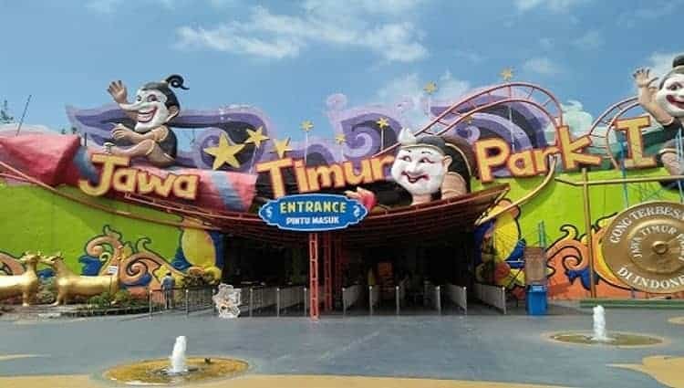

Jatim Park
Jatim Park adalah sebuah tempat rekreasi dan taman belajar yang terdapat di Kota Batu, Jawa Timur. Objek wisata ini berada sekitar 20 km barat Kota Malang, dan kini menjadi salah satu icon wisata Jawa Timur. Objek wisata ini memiliki 36 wahana, di antaranya kolam renang raksasa ( dengan latar belakang patung Ken Dedes, Ken Arok, dan Mpu Gandring), spinning coaster, dan drop zone. Wahana pendidikan yang menjadi pusat perhatian di antaranya adalah Volcano dan Galeri Nusantara yang juga terdapat tanaman agro , diorama binatang langka, dan miniatur candi-candi. Jatim Park 1 beralamat di Jalan Kartika no. 2, yang berdekatan dengan Klub Bunga
Jatim Park 1 dinobatkan sebagai juara 1 kategori wisata buatan berskala besar tingkat nasional yang dianugerahkan Menteri Pariwisata dan Ekonomi Kreatif, Mari Elka Pangestu, Jumat (27/9/2013), di Jakarta. “Saya tidak menyangka Kota Wisata Batu sedemikian indah. Kita tidak perlu ke Disneyland, Ancol, cukup disini (Batu, Red),” kata Mari Elka Pengestu di Klub Bunga dalam acara Galadinner bersama Muspida Malang Raya, Rabu